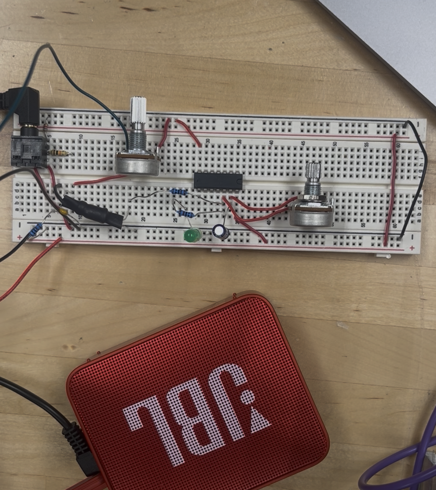
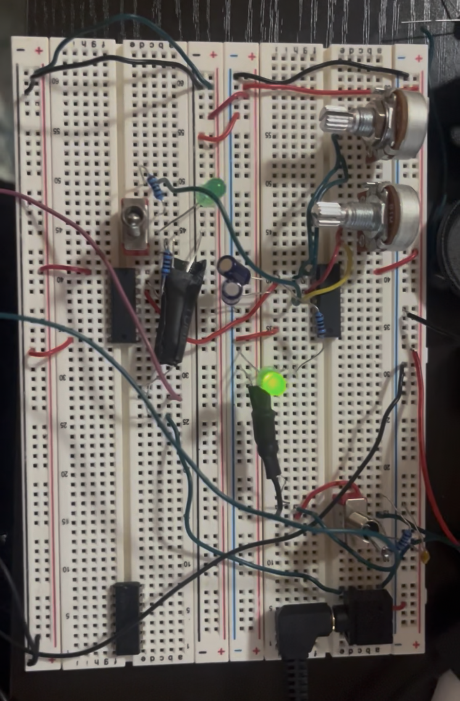
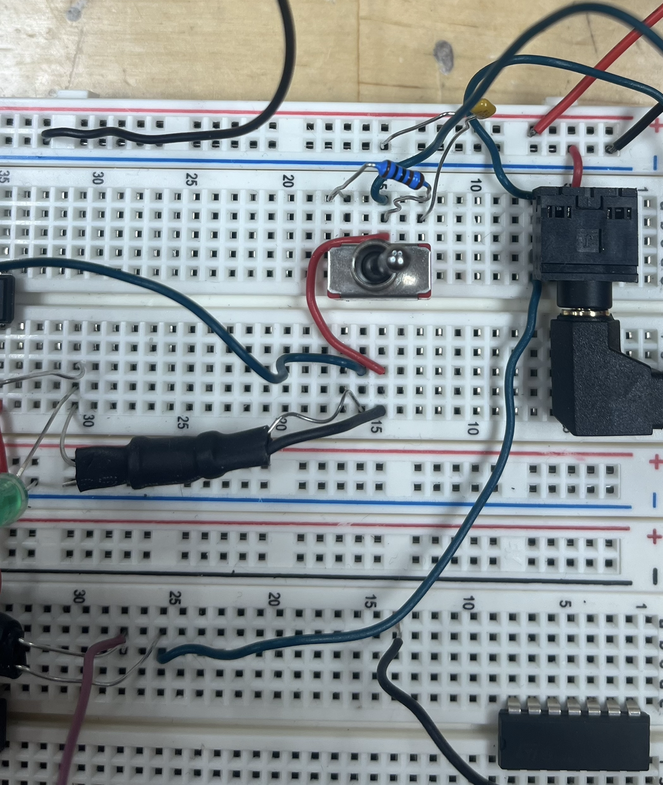
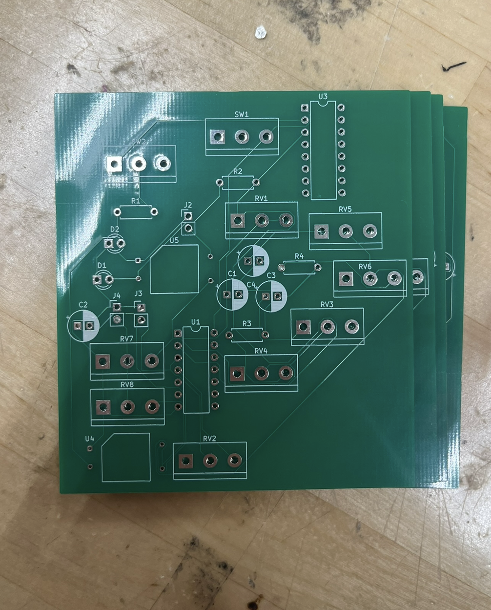
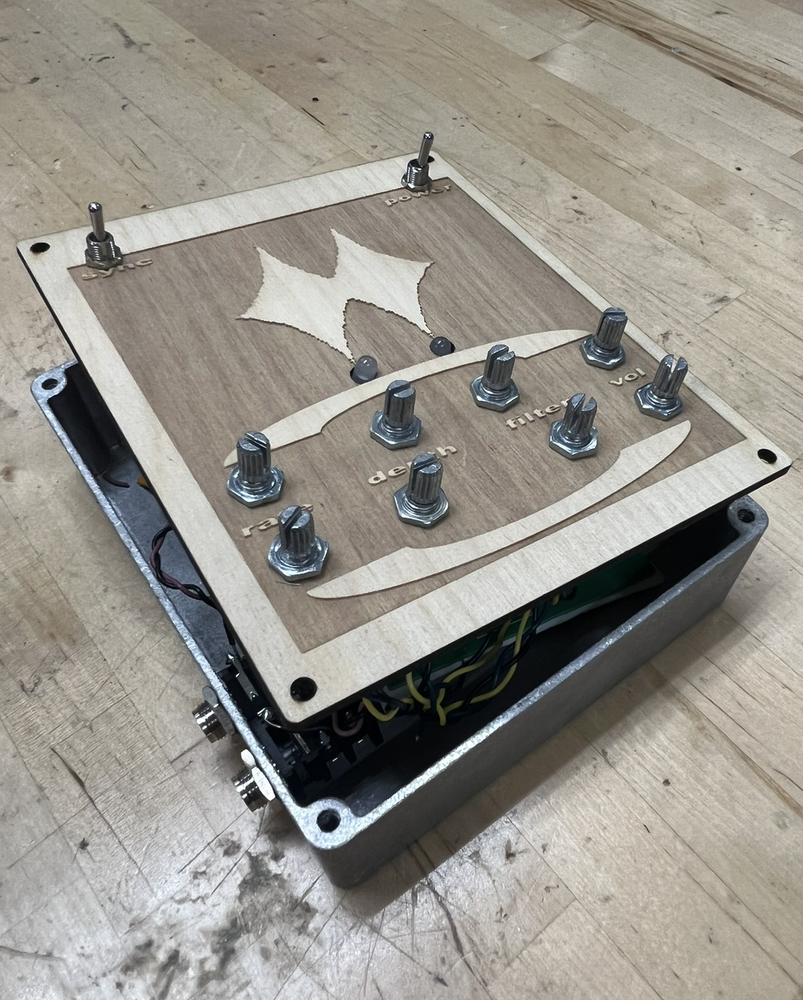

( 001 )
: dual-tremolo :
analog tremolo audio effect pedal that controls two audio
sources.
allows for synced or unsynced rates as well as
depth, filter, and volume control.
: intentions :
explore capabillities and applications of analog CMOS circuits
design a nontraditional mix between two sources
blend two sonic landscapes into one
: materials :
| name | price | supplier |
|---|---|---|
| CD40106 | $0.77 | digikey |
| CD4049 | $0.73 | digikey |
| 10uf capacitor | $0.24 | digikey |
| 0.1uf capacitor | $0.30 | digikey |
| audio jack | $1.18 | digikey |
| led | $0.23 | digikey |
| 10k resistor | $0.10 | digikey |
| b100k potentiometer | $2.45 | digikey |
| a10k potentiometer | $2.48 | digikey |
| switch | $3.16 | digikey |
| 9v battery | $3.29 | digikey |
| battery connector | $0.97 | digikey |
| enclosure | varies | ebay but use whatever enclosure you want |
| thin wood (for faceplate) | varies | varies |
| wire | varies | varies (get solid core tho) |

: phase001 : building
this project started with a simple analog tremolo circuit build. this tremolo circuit uses the CD40106- a commonly used CMOS chip that I used as an oscillation source. a potentiometer is used to control the speed of the oscillation. then, that oscillation controls an led that's paired to a photoresistor (ie. a vactrol or optoisolator). finally, an audio source is connected in a way that only allows it to be routed to the audio out jack when the led is on (so: oscillator switches on = led is on = audio plays out ... and then oscillator switches off = led is off = audio doesn't play).

: phase002 : experimenting
as i was building the original circuit, i thought it might be interesting to do something else in the period of silence when the oscillator is in the 'off' state. i workshopped a few ideas but eventually landed on just another audio source. to make this happen, i used a CD4049 to invert the original oscillation so i was left with a new oscillator that is always in an opposite state of the first (1st oscillator off = 2nd oscillator on) and then set up my 2nd audio source with the optoisolator in the same way.

: phase003 : adding features
building upon this idea, i opted to give users the option between having the tremolo rates synced like this or to control their rates independently of one another. i built out a second oscillator on the 40106 and let the users pick their rate situation with a switch. i also added a control on each audio path for the depth of the tremolo (meaning: how quiet does it get when the oscillator is in an off state, does it mute completely or just get quieter), filtering, and volume.

: phase004 : digitizing
when the circuit was completed i needed it to take a more permanent form, so i decided to design a pcb for it using kicad. i'm not going to pretend like i have any expertise in this area, so i basically fumbled around googling feverishly the whole time until i had something i thought might work, and ordered a few pcb's using jlcpcb. i did mess a couple things up (yes i did forget to ground a couple things) but luckily it wasn't anything i couldn't find a workaround for. i soldered my parts to the board and (with those few adjustments) everything was working!

: phase005 : fabricating
for my enclosure, i needed something sturdy that i could also drill/carve/etch holes into to fit my knobs, switches, and audio jacks through. for the audio jacks, i had my dad drill a couple holes in the sides of the box for me. for the face plate, i wanted things to be ultra precise and i also wanted a way to incorporate a graphic so i decided to use some thin scrap wood and a laser cutter to make this happen. i designed the faceplate with adobe illustrator so i could upload that vector file to the laser cutter software. at that point, all that was left was to do was properly fit everything inside the case and boom it was done and ready to go!